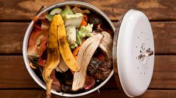

In the past decade, food waste has dramatically increased. All this food waste is having disastrous impacts on our environment. Food waste in Singapore is a big deal. Studies have shown that restaurants and school contribute about 33 billion pounds of food waste each year. In addition to this, grocery stores also contribute a lot to the food waste crisis. While food waste is a big problem, so is poverty. Around 23,000 children in Singapore are malnourished and additionally, 1 in every 10 Singaporeans lack basic needs. Singapore is thought of as a luxurious, high-end country, but what people don’t realise is that there are tons of people living in poverty. Food is a basic human need which many of cannot afford. It takes around SG$1000 each month to feed a family of four. In singapore where there are people who barely have SG$1,800 to live off of per month, after paying for food, they’re left with only 800 for all other necessities such as fees, electricity and water. That’s why we decided to come up with a solution that could kill both birds with the same stone.
Our idea came to be because we had just completed the humanities unit of ‘food on the move’ in this unit, we covered food insecurity in Singapore as well as a food-related topic to do an independent inquiry on. We were all very interested in these food-related issues and wanted to be able to solve as many of these issues as we could. This is why our idea would help solve two massive issues related to food. Food insecurity for people in poverty and food waste. Essentially, our idea would mean that we would take foods that are close to expiring from supermarkets, restaurants (fresh leftover food) and repurpose them into meals for the less fortunate who are suffering from food insecurity. We would sell these to them for cheaper prices, but we’d also make sure that we provide them with a balanced diet, considering everything from nutrients to dietary requirements. With this, we have developed a website to inform people about the issue and our solution and an app that where people can order ready-made meals off of.